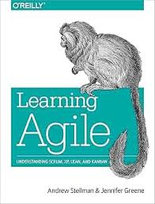

Cargo Cult Agile

I remember reading this one a while ago when I first acted as Scrum Master for an Agile team and finding it really useful. I thought I'd revisit it to see how it holds up.
Overall Impressions
I'm still impressed by the breadth and depth of coverage the book manages - while keeping your attention with frequent vivid stories depicting how teams trying to use Agile can trip up or experience problems. It manages to give a quick but thorough run-down of general Agile principles and then a whistle-stop tour through the most commonly used Agile methodologies, comparing them and examining what the experience of teams using these techniques might look like, day to day. I think the book was a great grounding for me when I was new to the world of Agile, but I also appreciate the insights I can glean from it now after more experience. The anecdotes definitely ring true and are one of the best parts of the book - they remind me of a 'business novel' like The Goal, with characters who you end up rooting for to learn more of the Agile principles and succeed. I could see myself and colleagues at different times in the past in quite a few of them!
Cargo Cult Agile
A concept occurred to me while reading the book (I'm sure I'm not the first to think of it). It covers a lot of the sorts of situations explored in the book. Richard Feynman memorably described 'Cargo Cult Science' in a speech at Caltech:
" In the South Seas there is a Cargo Cult of people. During the war they saw airplanes land with lots of good materials, and they want the same thing to happen now. So they’ve arranged to make things like runways, to put fires along the sides of the runways, to make a wooden hut for a man to sit in, with two wooden pieces on his head like headphones and bars of bamboo sticking out like antennas—he’s the controller—and they wait for the airplanes to land. They’re doing everything right. The form is perfect. It looks exactly the way it looked before. But it doesn’t work. No airplanes land. So I call these things Cargo Cult Science, because they follow all the apparent precepts and forms of scientific investigation, but they’re missing something essential, because the planes don’t land."
In the same fashion, there are many examples of what I'd call 'Cargo Cult Agile' - companies that appear to have implemented Agile, that claim to practice it - but if you dig down below the surface and observe their actual practices (and results) you must conclude that they are not really practicing Agile. In the best cases, they have taken a lot of Agile ideas and good practices and are using them to help their business - but haven't committed to all parts of a technique or methodology ('Scrum-But'). At worst, they've just renamed their existing business processes to make them sound more Agile.
For instance, a lot of software businesses run a daily stand-up meeting for each team. Perhaps they do this because they've heard it's a good idea, or it might be that it's embarrassing not to, these days. But if you were to be a fly on the wall at that meeting you might find it's devolved into a daily status report to a boss, or that not everyone gets a chance to speak, or that it drags on for far longer than a stand-up should and everyone's sitting down because their legs get exhausted. Likewise, I'm sure that many people share the experience of being on a team that's pressed for time, on a tight deadline imposed from above, and begins to throw Agile practices by the wayside. If practicing Scrum, it feels as if there's not enough time to perform some of the Scrum ceremonies, so we won't do a Sprint Review this month, or we won't plan the next Sprint right away but just launch into doing things. But in reality every technique that's dropped leaves you less in control of your project's trajectory, stuck firefighting and unable to surface long enough to focus on what's really important.
The business stories in the book dig into this sort of situation and explore how and why it can come to be. The Scrum concept of 'Scrum-But' fits in well with a lot of the anecdotes in the book - ie when someone describes their Agile practice as 'Scrum, but we don't do xyz'. Sometimes everyone gets tired and lapses into a less effective way of doing things, but the most insidious is when a company have tried to adopt Agile, because they hear it's best practice, but don't really want to change the way they do things. So they neglect or ignore the parts of Agile that threaten the way they already operate.
The worst part of Cargo Cult Agile is that it leaves the impression on people - particularly graduates who don't have a wide experience - that this is what Agile means. They're often left with a lasting distaste for the labels of concepts that are supposed to help energise and jell a team. If your regular 'stand-up' meeting lasted 45 minutes and you often didn't get the chance to speak because it was dominated by senior engineers discussing issues with each other in depth as you leant against the wall and tried to stifle your yawns ... you're not going to be keen on going to stand-up meetings in future. And if you become a senior engineer, perhaps you'll feel it's OK to dominate Stand Ups with your longwinded technical discussions, since that's how you learned about the idea of a stand-up. This is not good for our discipline's professionalism.
There are valiant attempts to fight these tendencies by Agile practicioners worldwide. Training offered by the Scrum Alliance attempts to put the practice of Scrum in particular on a more professional footing, and it's a good sign when a company sends its employees on Certified Scrum Master training as a matter of course - it means they are more likely to have some form of committment to Agile. But there can still be a large disconnect - a chasm - between the ideals that someone learns on a training course, and the reality they experience when they return to the office.
Another avenue through which Agile can get more successful adoption is hiring Agile coaches to work alongside teams for weeks or months and coach them in the practices and techniques of Agile in person. These folks have a daunting job indeed. Not only do they have to convince the cynical programmers that they're working alongside that this management fad (for they will have lived through many) will actually make a positive difference to their work lives - they also have to convince top management that it is worthwhile. Often, organisations will have lived through multiple unsuccessful attempts at transforming software delivery into an Agile process. The pinnacle of success in Agile adoption is always fragile. It only takes a little more institutional inertia, a little more doubt from management to reverse such a transformation entirely.
Fundamentally at odds
It's easy to pick up a simplistic idea of Agile, but hard to put the principles into practice, because they involve things that management in particular is uncomfortable with - giving up control to the development team, not knowing in advance all the details of what will be made, trusting the people who will do the work to estimate the time it will take. As Thomas Lindquist points out, fundamentally what's going on here is a collision between the egalitarian values of Agile with the typical command-and-control corporate structure.
"The hard truth is that Agile and Traditional Management still don’t get along. In repeated polls of people working in many different firms where Agile and Scrum are being implemented, somewhere between 70 to 90% report tension between the way Agile/Scrum teams are run in their organization and the way the rest of the organization is managed. Generally less than 10% reported 'no tension.'" Steve Denning, Is Agile Just Another Management Fad?
This is a bit of a depressing realisation, because it means these problems are baked into many organisations from the start. Those who wish to implement Agile can naturally expect resistance, a constant struggle to preserve the ideals of the methodologies against the tendencies of their own organisation, unless they are lucky enough to work for a smaller organisation or one with a more egalitarian structure (or for themselves, of course).
As Jurgen Appelo observes in the foreword to Michael Sahota's 'Agile Survival Guide' (which I highly recommend for thinking about this problem),
"People don’t struggle so much with the adoption of Agile practices. They struggle with the transformation to the Agile mindset, because many organizational cultures actively resist it."
Why do they actively resist it? Sahota compares it to T-Cells in the immune system, designed to kill foreign elements in the body (organisation). When one team makes a successful transformation to Agile ways of working, they experience a reaction from other parts of the organisation - unless they can disguise themselves as appearing to do 'business as usual'. In one of his suggestions, this takes the form of a useless Microsoft Project Plan that has no value to them or their customers but is required by the organisation for their team to work without further disturbance. Sahota suggests that Scrum is actually too powerful a tool - he points out "Scrum is designed to disrupt existing power and control structures by creating new roles (Product Owner, Scrum Master, the Team). It also posits self-organizing teams as the fundamental building block of organizations. As such, it should be avoided if at all possible" as it will inevitably cause conflict and a complete failure of Agile adoption.
What is it that makes organisations so resistant to the very techniques that would help their workers do better work, become more closely connected to customers, have more control over their working environments and thus, be happier at work? Isn't that ostensibly what corporations want for their employees? Well, not really. Outside of vapid public relations exercises, what corporations actually want is what their shareholders want: to extract a maximum of profit from the efforts of their labour force, who they regard as interchangeable Human Resources. This leads to the dark side of Agile:
"[T]he danger [is] that people outside the development team will hear these metaphors and misunderstand them — as a promise of work at a greater intensity and nothing more. Thinking that, apart from that, Agile is business as usual. Still yearning to make more money out of predictability, lower skills and lower wages. Not understanding that the point of Agile is to be Antifragile."
Is your development team stuck in this sort of situation? How did you try to mitigate it? As always, I'm interested to know your thoughts via email.
 Here's what the board looked like near the start of the two day course.
Here's what the board looked like near the start of the two day course. A mindmap from my notes about the different Scrum roles
A mindmap from my notes about the different Scrum roles